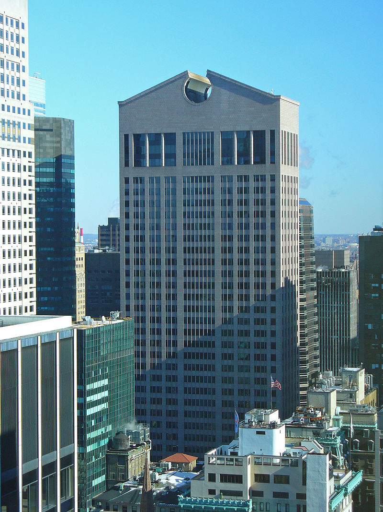
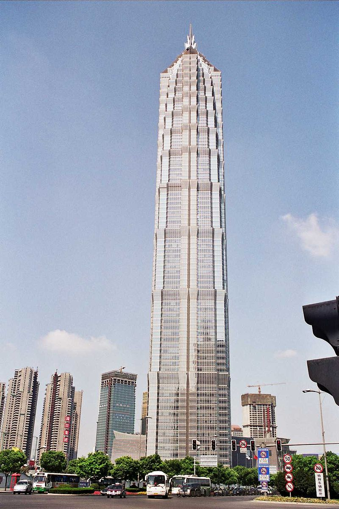
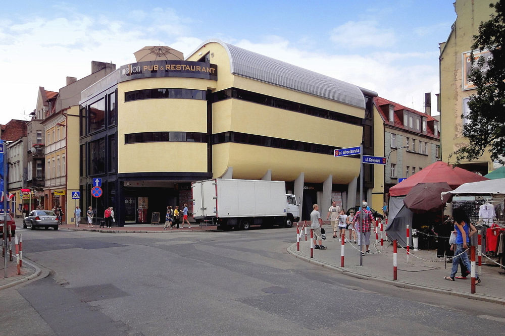
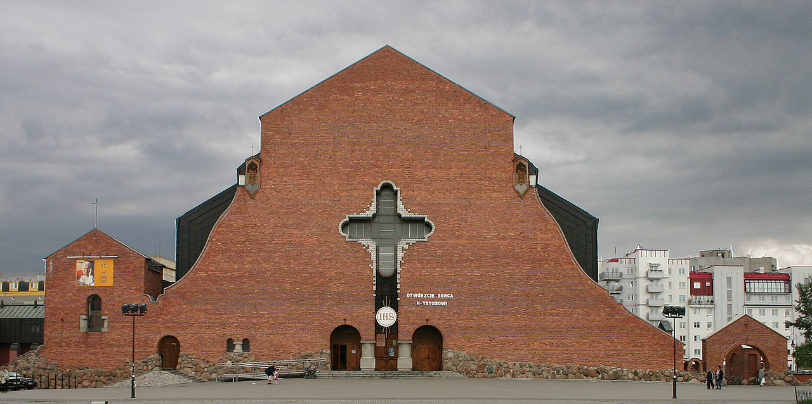
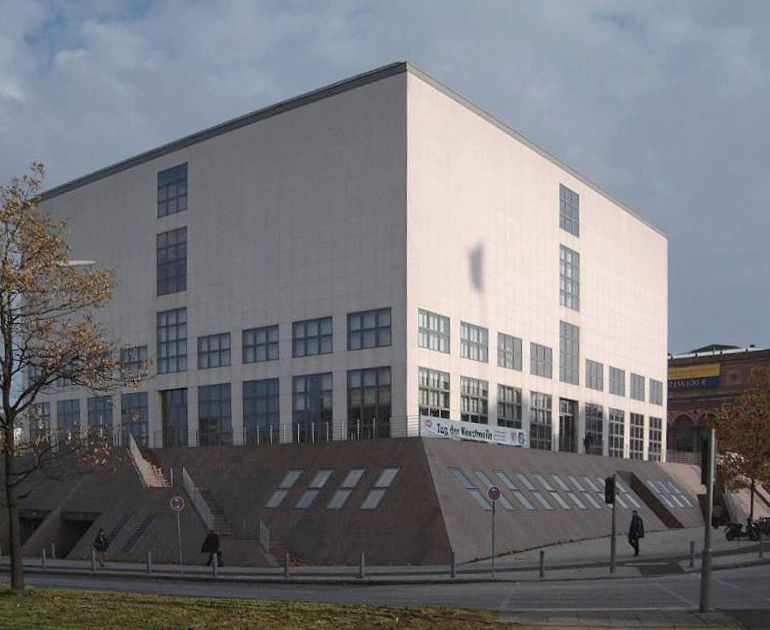
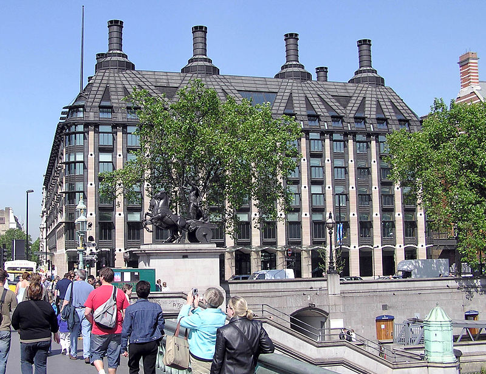
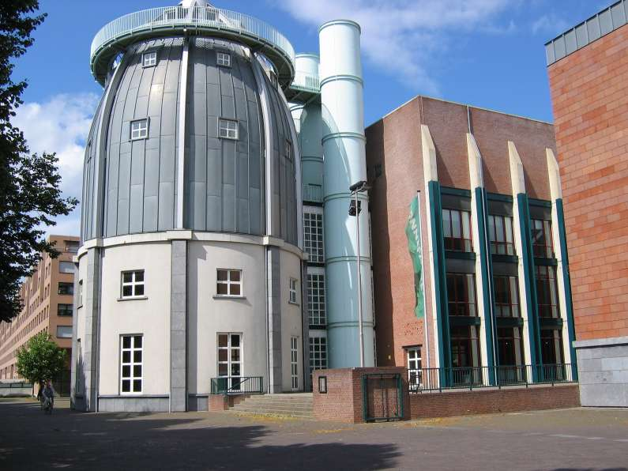
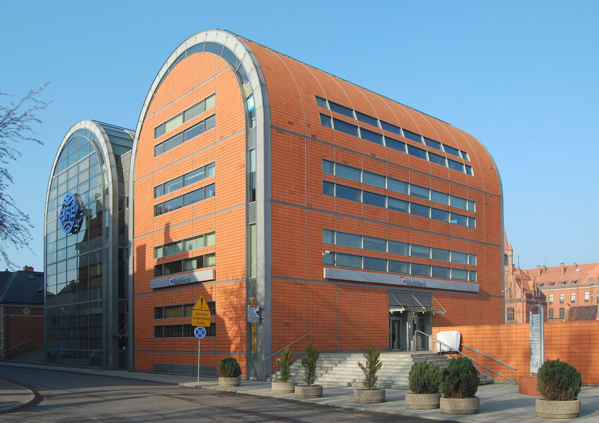

Postmodernizm nastąpił zaraz po modernizmie w połowie lat 60. XX w. W odróżnieniu od poprzednika, jest nastawiony na kompozycję, nie zważając uwagi na użytkowość. Architektura postmodernizmu charakteryzuje się złożonością i szerokim procesem komponowania.
Wielki Łuk Braterstwa w Paryżu, Johann Otto von Spreckelsen
Według postmodernistycznych architektów budynek nie musi ulegać postępowi technicznemu i upływającemu czasu. Budynki postmodernistyczne miały przede wszystkim obrazem upodobań i subiektywności architekta.
Nazwy postmodernizm po raz pierwszy użył Joseph Hadnut w 1945 roku. Terminu postmodernizm jako po-modernizmie wprowadzili dziennikarze New York Timesa.
Casinò di Campione in Campione d’Italia, Mario Botta
Twórcy traktowali ideę budynku ponad funkcjonalnością. Wygląd budynku ma być dekoracją. Znaczenie budynkowi nadają symbole, takie jak portal, wieża, cokół, kartownica, szkło i ich kontrastowe zestawienia. Zdaniem postmodernistów konstrukcje modernistyczne są pozbawione kontekstu, przypadkowe, przywołujące inne skojarzenia od zamierzonych (np. kościół, który przypomina biurowiec). Budowle są pełne ornamentów, symboli i symetrii. Znamienne dla twórców postmodernistycznych jest skupienie się na formalnych aspektach architektury i pomijanie kwestii funkcjonalności.
Najpopularniejsi architekci postmodernizmu:
Chcesz dowiedzieć się więcej o postmodernizmie? Sprawdź Wikipedię, klikając tutaj.
Poznaj więcej budynków charakterystycznych dla postmodernizmu:
|
 Ph. Johnson AT&T Building w Nowym Jorku na Manhattanie |
 Wieżowiec Jin Mao w Szanghaju, Skidmore, Owings and Merrill |
|
 Budynek usługowy w Ostrowie Wielkopolskim |
 Kościół Wniebowstąpienia Pańskiego, M. Budzyński |
|
 Galeria Sztuki Współczesnej w Hamburgu, O. M. Ungers |
 Biura parlamentu w Londynie, M. Hopkins |
|
 Bonnefantenmuseum w Maastricht, A. Rossi |
 BRE w Bydgoszczy – projekt A. Bulanda, W. Mucha |